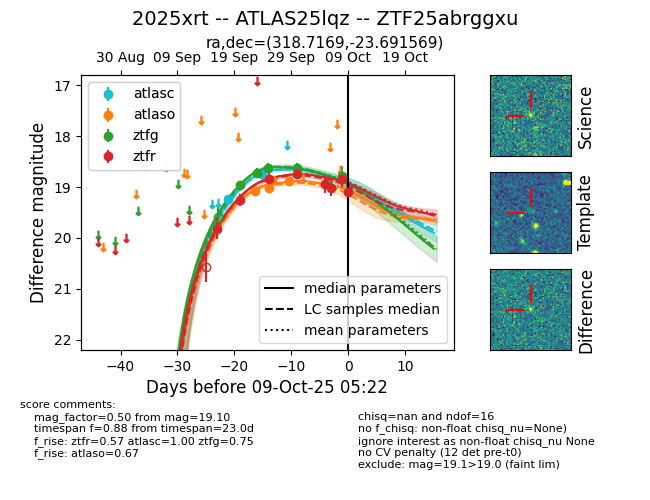
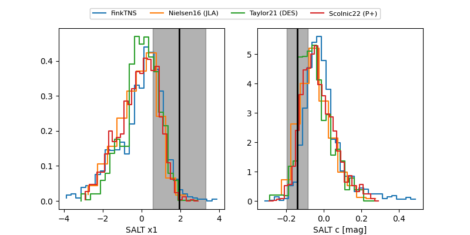

FINK: ZTF25abrggxu
Lasair: ZTF25abrggxu
ALeRCE: ZTF25abrggxu
TNS: 2025xrt
YSE: 2025xrt
ZTF25abrggxu (ztf,fink)
2025xrt (tns,yse)
ATLAS25lqz (atlas)
equatorial (ra, dec) = (318.7169,-23.69157)
galactic (l, b) = (24.2735,-41.34660)


last atlasc=18.74, atlaso=18.88, ztfg=18.79, ztfr=19.10
2 atlasc, 4 atlaso, 5 ztfg, 8 ztfr detections